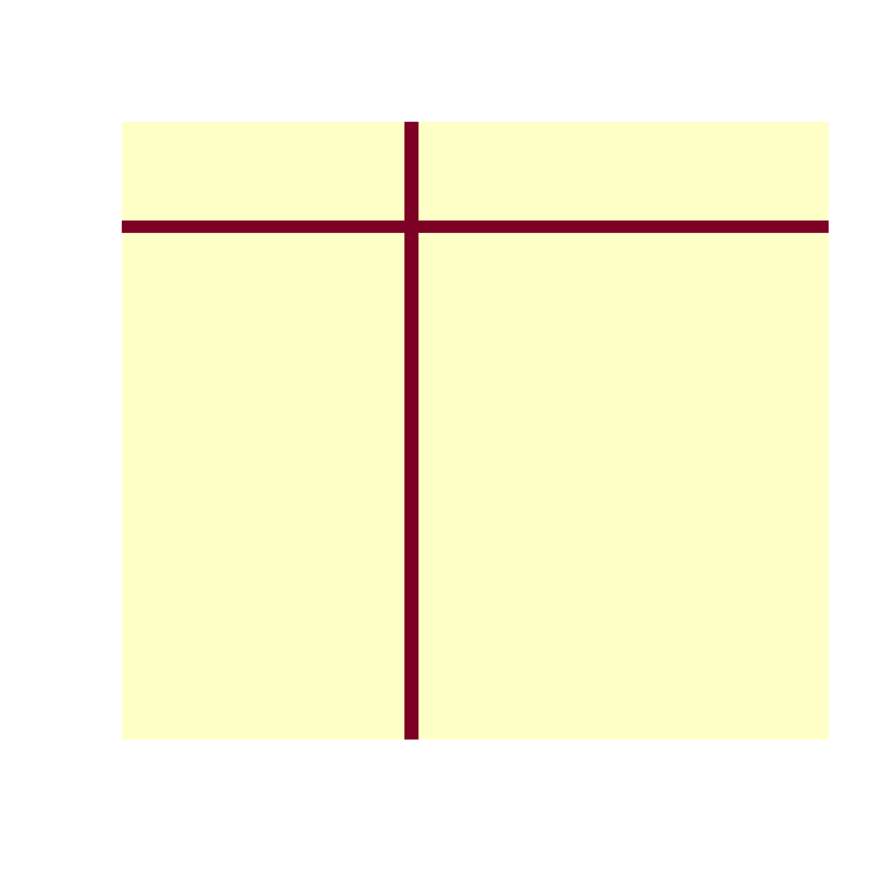
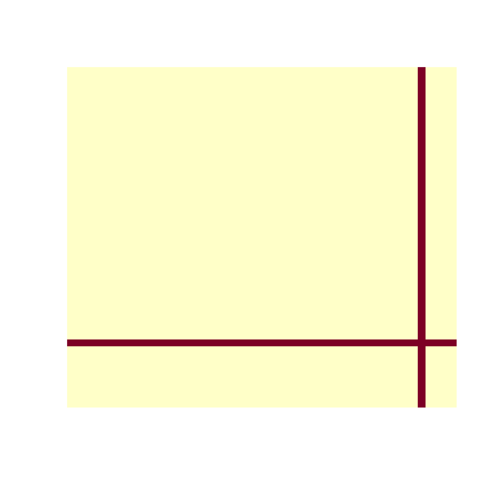
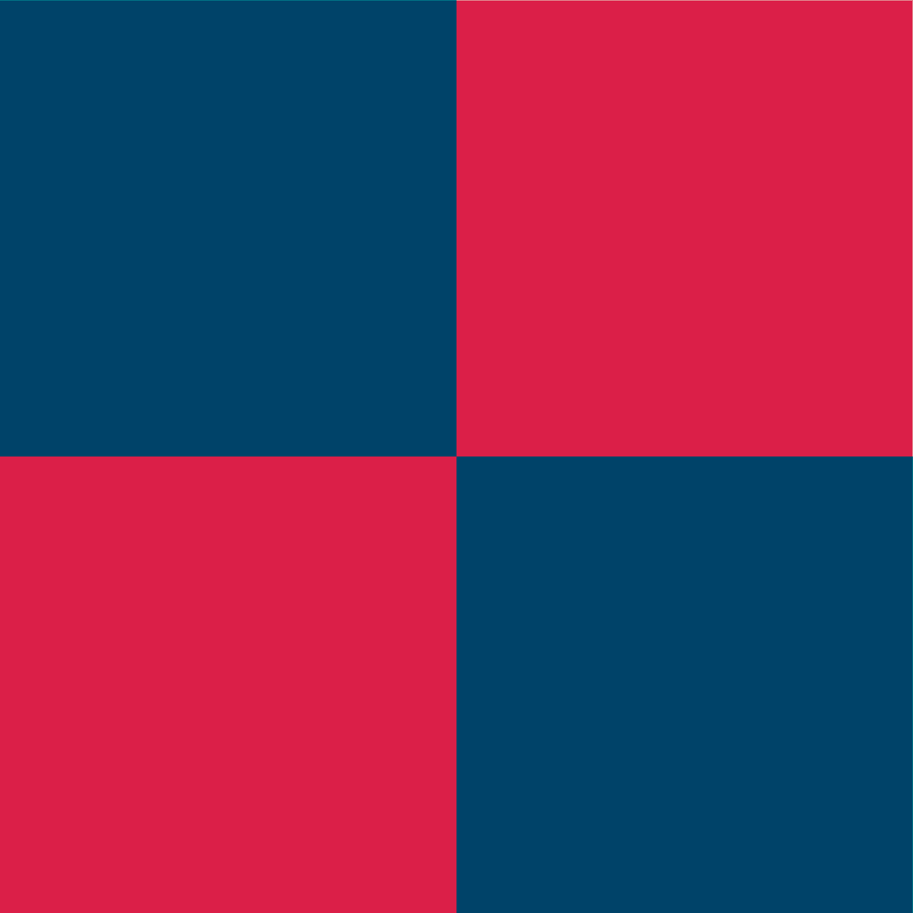
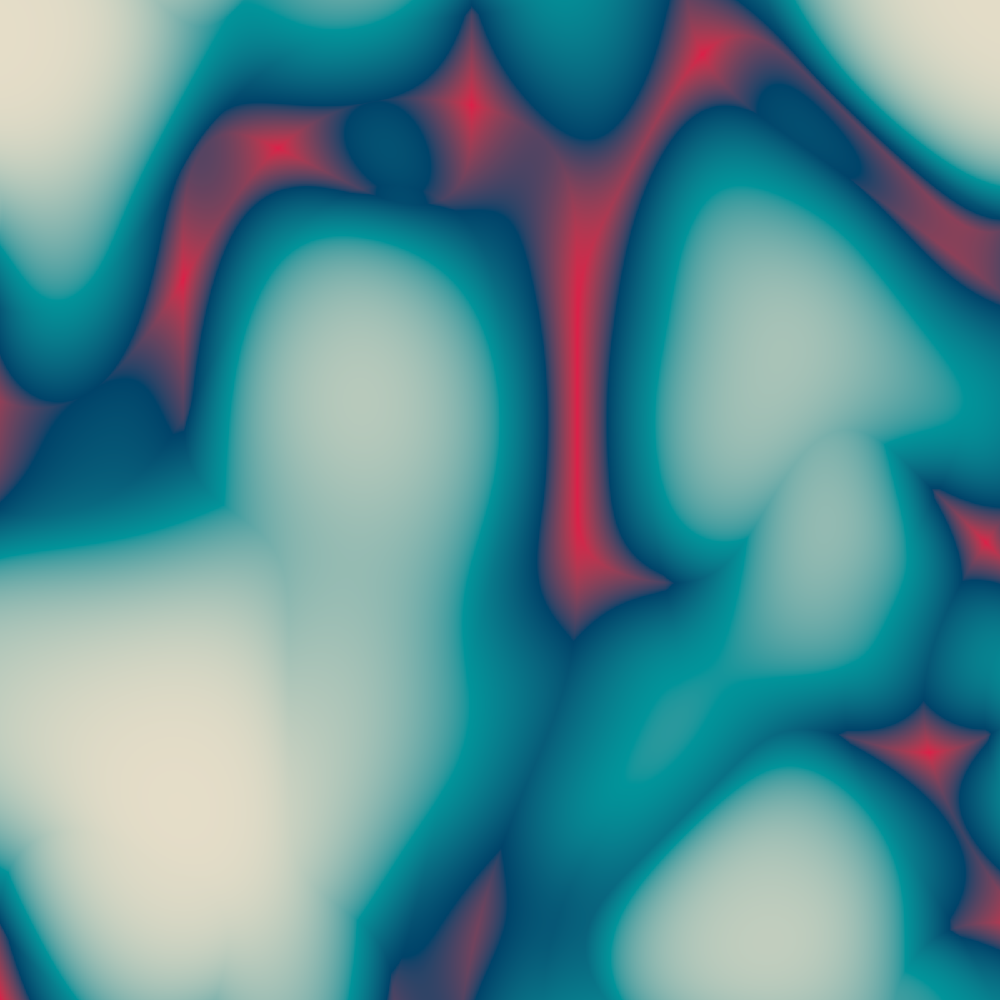
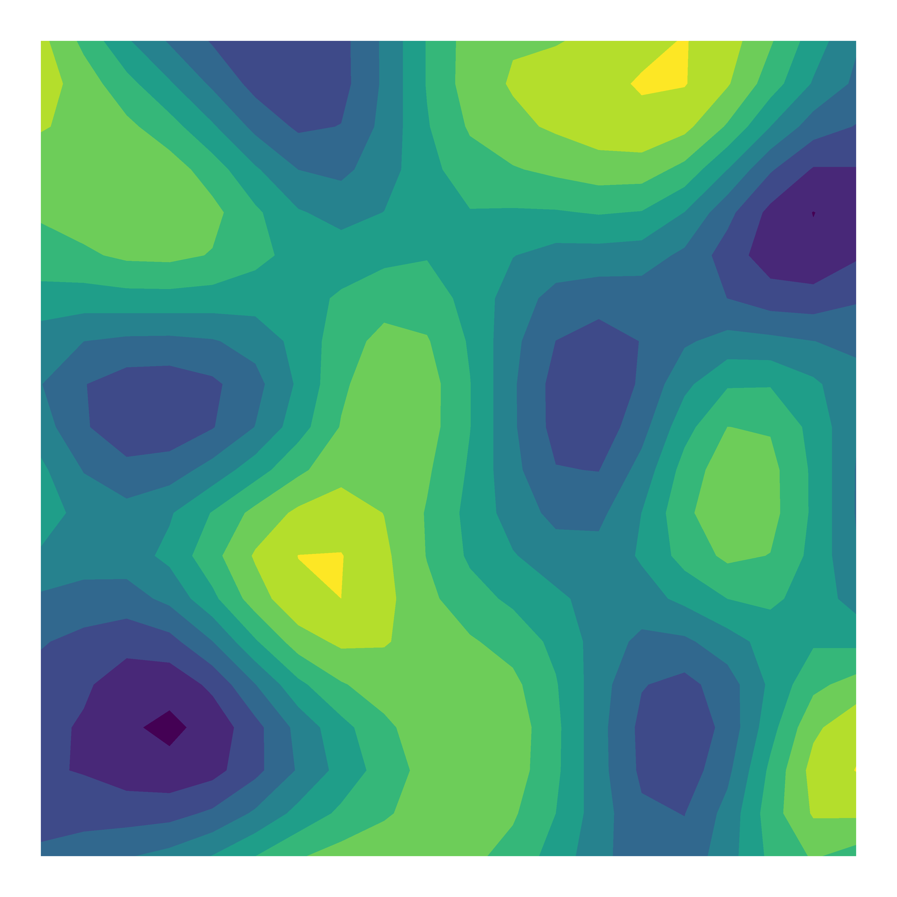
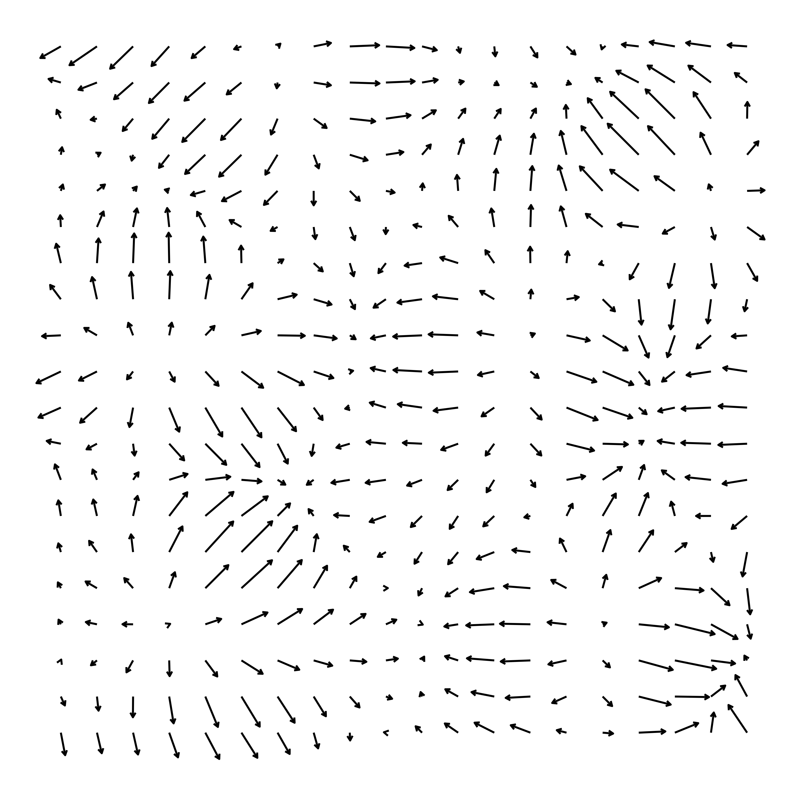
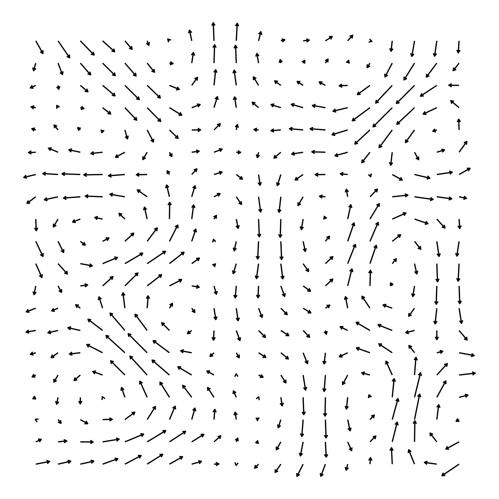
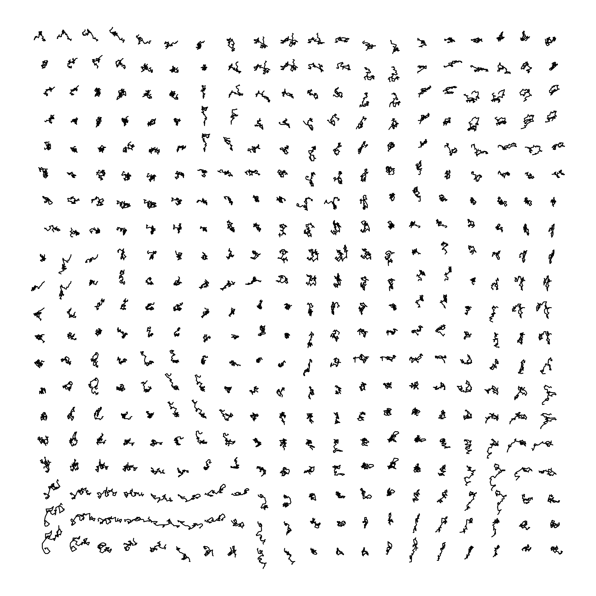
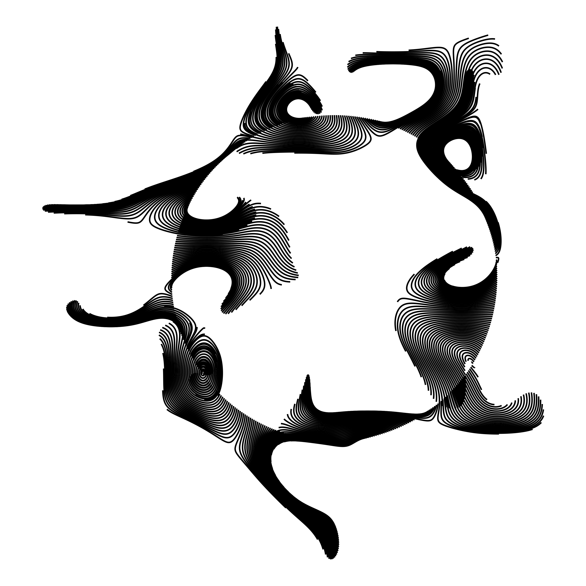
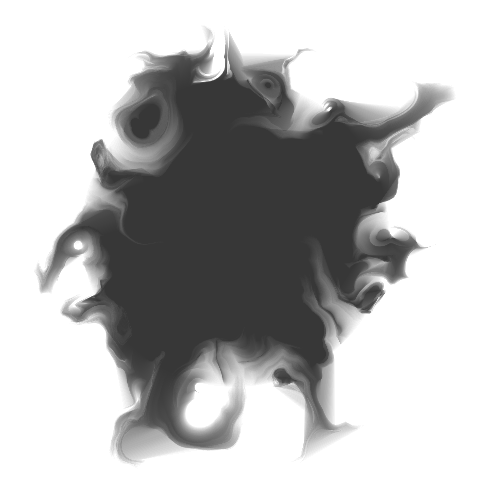

![]()
library(dplyr)
library(purrr)
library(tibble)
library(ggplot2)
library(ggthemes)
library(ambient)A couple of years ago I gave an invited workshop called art from code at the 2022 rstudio::conf (now posit::conf) conference. As part of the workshop I wrote a lengthy series of notes on how to make generative art using R, all of which were released under a CC-BY licence. For a while now I’d been thinking I should do something with these notes. I considered writing a book, but in all honesty I don’t have the spare capacity for a side-project of that scale these days. I can barely keep up with the workload at my day job as it is. So instead, I’ve decided that I’d port them over to this site as a series of blog posts. In doing so I’ve made a deliberate decision not to modify the original content too much (nobody loves it when an artist tries to “improve” the original, after all). All I’ve done is update the code to accommodate package changes since 2022, and some minor edits so that the images are legible when embedded in this blog (which is light-themed, and the original was dark-theme). Other than that, I’ve left it alone. This is the second post in that series.
- Prelude
- Spatial tricks with ambient
- Polygon tricks
- Shading tricks
- Iterated function systems
- Tiles and tessellations
- Pixel filters
Sampling spatial patterns
Generative art relies on having access to a source of randomness, and using that randomness to construct patterned objects. In the last session I wrote a simple function to generate random palettes, for instance:
sample_canva <- function(seed = NULL) {
if(!is.null(seed)) set.seed(seed)
sample(ggthemes::canva_palettes, 1)[[1]]
}Every time I call this function (assuming I don’t set the seed argument), R uses the pseudorandom number generator to select a palette of four colours:
sample_canva()
sample_canva()
sample_canva()[1] "#fcc875" "#baa896" "#e6ccb5" "#e38b75"
[1] "#99d3df" "#88bbd6" "#cdcdcd" "#e9e9e9"
[1] "#265c00" "#68a225" "#b3de81" "#fdffff"Each of these colours is itself an object defined in a three dimensional space (the hex codes refer to co-ordinates in RGB space), and when I sample a palette of four colours what I’m really doing is constructing a random object with 12 components.
We can take this idea further. The sample_data() function I wrote in the last session creates random tibbles according to some simple rules, and those tibbles are structured objects too. Admittedly the structure to those objects isn’t very complicated, because there’s no pattern to numbers in the generated table, but there’s nothing stopping us from writing a function that randomly generates tabular data structures that have patterns in them, right? For instance, I could do this:
sample_cross_matrix <- function(n = 10, seed = NULL) {
if(!is.null(seed)) set.seed(seed)
mat <- matrix(data = 0, nrow = n, ncol = n)
mat[sample(n, 1), ] <- 1
mat[, sample(n, 1)] <- 1
return(mat)
}
sample_cross_matrix() [,1] [,2] [,3] [,4] [,5] [,6] [,7] [,8] [,9] [,10]
[1,] 0 0 1 0 0 0 0 0 0 0
[2,] 1 1 1 1 1 1 1 1 1 1
[3,] 0 0 1 0 0 0 0 0 0 0
[4,] 0 0 1 0 0 0 0 0 0 0
[5,] 0 0 1 0 0 0 0 0 0 0
[6,] 0 0 1 0 0 0 0 0 0 0
[7,] 0 0 1 0 0 0 0 0 0 0
[8,] 0 0 1 0 0 0 0 0 0 0
[9,] 0 0 1 0 0 0 0 0 0 0
[10,] 0 0 1 0 0 0 0 0 0 0Again, this isn’t the most complicated example, but it’s an illustration of the idea that we can write functions to sample random spatial patterns:
image(sample_cross_matrix(n = 50), axes = FALSE, useRaster = TRUE)
image(sample_cross_matrix(n = 50), axes = FALSE, useRaster = TRUE)
image(sample_cross_matrix(n = 50), axes = FALSE, useRaster = TRUE)

I’ll concede that a generative art system that draws a cross at a random location in the image isn’t the most exciting or innovative thing I’ve ever written, but the core idea is clear I hope. And you would probably be unsurprised to learn that there are a number of more sophisticated tools you can use to generate random spatial patterns.
In this post I’ll introduce the ambient package, developed by Thomas Lin Pedersen, which supplies R bindings to a C++ library called FastNoise.
Our first ambient artwork
The first step in creating art using the ambient package is to define the “canvas”, a spatial grid of x and y co-ordinates in which values will be stored. I find it helpful to imagine my canvas as the unit square: the smallest value is 0 and the largest value is 1. If I want an 800x800 grid, I use the seq() function to define a length-800 sequence of evenly-spaced numbers starting at 0 and ending at 1:
x_coords <- seq(from = 0, to = 1, length.out = 800)
y_coords <- seq(from = 0, to = 1, length.out = 800)The canvas that I’ll paint on will be a data frame consisting of all possible combinations of x_coords and y_coords. In base R we can create an object like this using the expand.grid() function, and there’s a tidy equivalent called expand_grid() in the tidyr package. However, when working with the ambient package I prefer to use the long_grid() function that it supplies:
canvas <- long_grid(x = x_coords, y = y_coords)
canvas# A tibble: 640,000 × 2
x y
<dbl> <dbl>
1 0 0
2 0 0.00125
3 0 0.00250
4 0 0.00375
5 0 0.00501
6 0 0.00626
7 0 0.00751
8 0 0.00876
9 0 0.0100
10 0 0.0113
# ℹ 639,990 more rowsThe reason I use long_grid() rather than one of the more familiar versions is that under the hood Thomas has supplied some optimisations that make these objects more efficient for generative art purposes. Among other things, you can easily convert them to arrays, matrices, and raster objects that respect the implied spatial grid, which makes it a lot easier to render images from these objects. But let’s not dive too deep into the details right now!
Now that we have a “canvas” we’ll want to add some “paint”, and to apply that paint we’ll need to select a “brush”. In this context, the brush is a spatial pattern generator of some kind. The ambient package includes many such generator functions. Some generate very regular patterns:
gen_waves()generates smooth concentric wave-like patternsgen_spheres()generates concentric circlesgen_checkerboard()generates grids of squares in a checkerboard pattern
Others generate very irregular patterns:
gen_white()generates white noise: equal intensity at every spatial frequency
The most interesting generators tend to be those that create patterns that have some structure but are still quite unpredictable:
gen_perlin()andgen_simplex()generate random “wavy” patternsgen_worley()generates random “cellular” patterns
We’ll see some examples of those later! For now let’s use gen_perlin() as our brush! Like all the pattern generators, the gen_perlin() function takes coordinate values as input. At a minimum it expects an x co-ordinate, but you can also supply y and z values if you like. You can also specify the frequency parameter, which sets the scale for the output: high frequency patterns will vary quickly as the co-ordinates change, low-frequency patterns will vary slowly. Compare these outputs for instance:
gen_perlin(x = 1:5, y = 1, frequency = .001, seed = 1)
gen_perlin(x = 1:5, y = 1, frequency = .5, seed = 1)[1] -0.001000010 -0.001000010 -0.001000009 -0.001000009 -0.001000007
[1] -0.375 0.000 0.000 -0.250 0.000Both versions show variability, but the scale is quite different! As an aside, notice that gen_perlin() also allows you to specify the seed used to generate the pattern, similar to the way I did earlier when writing sample_canva() to generate random palettes.
Now that we have a sense for what the gen_perlin() function does let’s use it to add a new column to our canvas. I have dplyr loaded so I’ll use mutate() to do this:
canvas <- canvas |>
mutate(paint = gen_perlin(x, y, frequency = 10, seed = 1234))
canvas# A tibble: 640,000 × 3
x y paint
<dbl> <dbl> <dbl>
1 0 0 0
2 0 0.00125 0.0125
3 0 0.00250 0.0249
4 0 0.00375 0.0370
5 0 0.00501 0.0489
6 0 0.00626 0.0604
7 0 0.00751 0.0713
8 0 0.00876 0.0817
9 0 0.0100 0.0915
10 0 0.0113 0.101
# ℹ 639,990 more rowsNow that I have this column, I can use it to control the fill aesthetic in a ggplot. The co-ordinate values x and y specify a two dimensional grid, which means I can use geom_raster() here to create my artwork:
art <- ggplot(canvas, aes(x, y, fill = paint)) +
geom_raster(show.legend = FALSE) To see what our Perlin art looks like, I’ll build the plot in three different ways. First poorly with no customisation of the ggplot theme and scales, then a little nicer by removing unneeded details, then finally with a little flair:
art
art +
theme_void() +
coord_equal()
art +
theme_void() +
coord_equal() +
scale_x_continuous(expand = c(0, 0)) +
scale_y_continuous(expand = c(0, 0)) +
scale_fill_gradientn(colours = sample_canva())Not bad. A little blurry looking, but it’s a nice place to start!
Our first system
The next step in the process is to start thinking about what aspects to the art should be variable, what aspects should be fixed, and use those insights to formalise this as a function. Some things that won’t change:
- The art will always be a square grid rendered with
geom_raster() - The spatial pattern will always come from one of the
ambient::gen_*()functions - We’ll always remove extraneous elements from the art using
theme_void()etc
These aspects to the art will be codified in the function body. There are some things that we might like to vary, however, and those will become arguments to the function:
- The colour
palettecould vary from piece to piece - The underlying
generatormight be different in each piece - The spatial
frequencycould be different in each piece - The number of
pixelsin the grid could vary - The random number generator
seedcould vary
make_noise_art <- function(
generator = gen_perlin,
frequency = 10,
seed = 1234,
pixels = 2000,
palette = c("#e5ddc8", "#01949a", "#004369", "#db1f48"),
...
) {
# define the grid
canvas <- long_grid(
x = seq(from = 0, to = 1, length.out = pixels),
y = seq(from = 0, to = 1, length.out = pixels)
)
# use the generator to add paint
canvas <- canvas |>
mutate(
paint = generator(
x, y,
frequency = frequency,
seed = seed,
...
)
)
# use ggplot2 to draw the picture
art <- canvas |>
ggplot(aes(x, y, fill = paint)) +
geom_raster(show.legend = FALSE) +
theme_void() +
coord_equal() +
scale_x_continuous(expand = c(0, 0)) +
scale_y_continuous(expand = c(0, 0)) +
scale_fill_gradientn(colours = palette)
return(art)
}Let’s take a lot the effect of each of these arguments. Varying seed changes the spatial pattern depicted in each piece, but it doesn’t change it in any systematic way:
make_noise_art(seed = 1234)
make_noise_art(seed = 1001)
make_noise_art(seed = 9999)
In contrast, when I change the frequency argument I get systematic variation. The granularity of the spatial pattern changes in predictable ways as the frequency changes:
make_noise_art(frequency = 10)
make_noise_art(frequency = 20)
make_noise_art(frequency = 90)
Here’s what happens when I vary palette. In the first example I’ve created a greyscale image by specifying a palette that runs from "white" to "black". The other two use palettes output by sample_canva():
make_noise_art(palette = c("white", "black"))
make_noise_art(palette = sample_canva(seed = 123))
make_noise_art(palette = sample_canva(seed = 456))Finally, we can vary the generator function. It probably will come as no surprise to discover that varying the generator has some wild effects. The output of a checkerboard pattern generator is fundamentally different to the output of a Worley noise generator, which in turn is very distinct from Perlin noise. As you become more familiar with using ambient you’ll start getting a sense of what each of these generators produce, and develop your own preferences for how to use them. For now, it’s enough to note that because the gen_*() functions all adopt (roughly) the same API, our make_noise_art() function works perfectly well when we swap out one for another:
make_noise_art(generator = gen_perlin)
make_noise_art(generator = gen_worley)
make_noise_art(generator = gen_waves) 

Why dplyr is a girls best friend
As you can see from the output we’ve created so far, spatial noise patterns can be quite pretty even without any special artistic intervention. Our make_noise_art() function isn’t complicated: it takes the output from a generator function like gen_perlin() and plots it as a raster object. It doesn’t manipulate or modify that output in any way. However, there’s nothing preventing us from doing precisely that if that’s what we want to do. To simplify the later code, let’s create a blank_canvas object that we can reuse as the starting point for our later pieces:
blank_canvas <- long_grid(
x = seq(from = 0, to = 1, length.out = 2000),
y = seq(from = 0, to = 1, length.out = 2000)
) Now, let’s imagine that we’ve used some ambient magic to add a column called paint to our canvas. Here’s a plotting function that we can use that plots this as a raster object, just like we’ve been doing in the previous pieces (it optionally takes a palette too):
plot_painted_canvas <- function(canvas, palette = NULL) {
if(is.null(palette)) {
palette <- c("#e5ddc8","#01949a","#004369","#db1f48")
}
canvas |>
ggplot(aes(x, y, fill = paint)) +
geom_raster(show.legend = FALSE) +
theme_void() +
coord_equal() +
scale_x_continuous(expand = c(0, 0)) +
scale_y_continuous(expand = c(0, 0)) +
scale_fill_gradientn(colours = palette)
}Now that we have these in place, we can recreate one of our earlier pieces by wrting it as a dplyr pipeline:
blank_canvas |>
mutate(paint = gen_perlin(x, y, frequency = 90, seed = 1234)) |>
plot_painted_canvas()
However, the mere fact that we can rewrite our art code like this opens up the possibility of using the dplyr data manipulation grammar in a more sophisticated way. Here’s an example that creates three different spatial patterns and then adds them together:
blank_canvas |>
mutate(
lf_noise = gen_simplex(x, y, frequency = 1, seed = 1234),
mf_noise = gen_simplex(x, y, frequency = 20, seed = 1234),
hf_noise = gen_simplex(x, y, frequency = 99, seed = 1234),
paint = lf_noise + mf_noise + hf_noise
) |>
plot_painted_canvas()
Recall that our plot_painted_canvas() function uses the x and y columns to define the grid, and the paint column to define the to-be-plotted values. The lf_noise, mf_noise, and hf_noise columns are ignored. They’re intermediate steps, components that get mixed together when we define the paint column!
In the previous example I created the paint column by adding three columns together, but there is nothing preventing me from defining more elaborate mixing rules. In the example below, for example, I’ve generated a fourth spatially-varying pattern and used as a “gating” mechanism. So now what we have is a situation where the lf_noise, mf_noise, and hf_noise patterns are mixed together in a spatially inhomogeneous way that depends on the value of the gate column:
blank_canvas |>
mutate(
lf_noise = gen_simplex(x, y, frequency = 1),
mf_noise = gen_simplex(x, y, frequency = 20),
hf_noise = gen_simplex(x, y, frequency = 99),
gate = gen_spheres(x, y, frequency = 10) |> normalise(),
paint = lf_noise +
(1 + mf_noise) * (gate >= .1 & gate < .6) +
(1 + hf_noise) * (gate >= .05)
) |>
plot_painted_canvas(palette = sample_canva(seed = 2))
The normalise() function in this code is supplied by the ambient package and in this context all I’m doing with it is ensuring that the output of the gen_spheres() generator is rescaled to lie between 0 and 1.
The same basic idea can be used to produce some quite striking pieces when we apply a fancier generator to construct the spatial gate pattern:
blank_canvas |>
mutate(
lf_noise = gen_simplex(x, y, frequency = 1),
mf_noise = gen_simplex(x, y, frequency = 20),
hf_noise = gen_simplex(x, y, frequency = 99),
gate = gen_simplex(x, y, frequency = 10) |> normalise(),
paint = lf_noise +
(2 + mf_noise) * (gate >= .2 & gate < .8) +
(2 + hf_noise) * (gate >= .1)
) |>
plot_painted_canvas(palette = sample_canva(seed = 3))
Fractals
You can also use the ambient package to create fractal patterns. The function that controls this is called fracture() and it’s easiest to demonstrate if we start with something simple. Suppose we have a “generator” function gen_sin() that generates sinusoidal patterns with a particular frequency. The code for this function is very simple:
gen_sin <- function(x, frequency, ...) {
sin(x * frequency)
}To create a fractal pattern based on this generator, we repeatedly apply this function to the input at different values of frequency. The outputs of repeated applications are combined together using a rule prescribed by a fractal function. This combination function doesn’t have to be very complicated: it might just be a linear combination! As an example, one of the fractal functions provided by ambient is fbm(), which stands for “fractional Brownian motion”. When this is used as the combination rule, the results are added together with increasing frequencies and decreasing strength. The code for fbm() is this:
fbm <- function(base, new, strength, ...) {
base + new * strength
}A base pattern is added to a new pattern, weighted by some strength. That’s all it does!
If we wanted to create a fractal based on the gen_sin() generator, using fbm() as our fractal function, this is the code we would use:
fracture(
x = 1:20,
noise = gen_sin,
fractal = fbm,
octaves = 8
) [1] 1.24983550 0.80892271 -0.26356816 -0.20012820 -0.97755603 -0.80161946
[7] 1.08394804 1.11211005 -0.24443826 -0.04492181 -0.97817310 -1.04255993
[13] 1.07719639 0.86143412 0.21216704 0.24305786 -0.95445686 -1.32043009
[19] 0.56698796 1.00122663In this code, octaves = 8 specifies the number of times to apply the generator and fractal function. In essence it is the number of iterations over which we run the algorithm. It’s easiest to see what this looks like if we gradually increase the number of iterations and plot the results:
dat <- tibble(
x = seq(0, 10, length.out = 1000),
y1 = fracture(x = x, noise = gen_sin, fractal = fbm, octaves = 1),
y2 = fracture(x = x, noise = gen_sin, fractal = fbm, octaves = 2),
y8 = fracture(x = x, noise = gen_sin, fractal = fbm, octaves = 8),
y20 = fracture(x = x, noise = gen_sin, fractal = fbm, octaves = 20)
)
ggplot(dat) + geom_path(aes(x, y1)) + ggtitle("One iteration")
ggplot(dat) + geom_path(aes(x, y2)) + ggtitle("Two iterations")
ggplot(dat) + geom_path(aes(x, y8)) + ggtitle("Eight iterations")
ggplot(dat) + geom_path(aes(x, y20)) + ggtitle("Twenty iterations")

As the number of octaves increases the plots become more and more detailed. In this case we can’t visually discriminate between 8 and 20 octaves because the differences are too fine-grained to be visible. That’s quite typical because – unless you modify the gain and frequency functions used by fracture() – each successive iteration (or octave) will be calculated at double the frequency of the previous one (leading to finer-grained changes) and with half the strength (less weight is given to later octaves). You can modify this if you want to. For example:
custom_fracture <- function(x, ...) {
fracture(
gain = function(strength) {strength * .8},
frequency = function(frequency) {frequency * 1.3},
noise = gen_sin,
fractal = fbm,
x = x,
...
)
}
dat <- tibble(
x = seq(0, 10, length.out = 1000),
y1 = custom_fracture(x, octaves = 1),
y2 = custom_fracture(x, octaves = 2),
y8 = custom_fracture(x, octaves = 8),
y20 = custom_fracture(x, octaves = 20)
)
ggplot(dat) + geom_path(aes(x, y1)) + ggtitle("One iteration")
ggplot(dat) + geom_path(aes(x, y2)) + ggtitle("Two iterations")
ggplot(dat) + geom_path(aes(x, y8)) + ggtitle("Eight iterations")
ggplot(dat) + geom_path(aes(x, y20)) + ggtitle("Twenty iterations")Hopefully you get the basic idea.
In any case, let’s take this same concept and start using it in conjunction with the spatial noise generators supplied by ambient. To keep things simple and avoid the need to write plotting code over and over, let’s define a fractal_art() function like this:
fractal_art <- function(fractal, generator, palette = NULL, ...) {
blank_canvas |>
mutate(
paint = fracture(
noise = generator,
fractal = fractal,
x = x,
y = y,
...
)
) |>
plot_painted_canvas(palette = palette)
}Here’s what happens when we use gen_checkerboard() as our spatial pattern generator, and fbm() as our fractal function:
fractal_art(fbm, gen_checkerboard, seed = 1, octaves = 1)
fractal_art(fbm, gen_checkerboard, seed = 1, octaves = 2)
fractal_art(fbm, gen_checkerboard, seed = 1, octaves = 20)
It has the same “feel” as the sinusoidal fractals we were working with earlier: as we increase the number of octaves the output contains more copies of the “checker board” pattern, each one depicted on a smaller scale than the last one. The same idea applies to the gen_waves() generator:
fractal_art(fbm, gen_waves, seed = 1, octaves = 1)
fractal_art(fbm, gen_waves, seed = 1, octaves = 2)
fractal_art(fbm, gen_waves, seed = 1, octaves = 20)By the time we reach 20 octaves, the image has a quite intricate pattern of concentric rings. It’s quite pretty, but gen_checkerboard() and gen_waves() are both very simple generator functions. What happens when our generator is a more elaborate multidimensional noise generator like gen_simplex()? Simplex noise looks like this before we apply any fractal function to it:
blank_canvas |>
mutate(paint = gen_simplex(x, y, seed = 2)) |>
plot_painted_canvas()Here’s what happens when we combine gen_simplex() with the fbm() fractal function:
fractal_art(fbm, gen_simplex, seed = 2, octaves = 1)
fractal_art(fbm, gen_simplex, seed = 2, octaves = 2)
fractal_art(fbm, gen_simplex, seed = 2, octaves = 20)

The result, once we reach 20 octaves, is quite intricate.
Changing the fractal function has a substantial effect on the output. So far all the fractals I’ve created have used fbm() as the fractal function, but there’s nothing stopping you from writing your own or using one of the other functions supplied by ambient. For example, the ridged() fractal function produces some very lovely patterns:
fractal_art(ridged, gen_simplex, seed = 2, octaves = 1)
fractal_art(ridged, gen_simplex, seed = 2, octaves = 2)
fractal_art(ridged, gen_simplex, seed = 2, octaves = 20)

It’s also possible to get nice effects by modifying the gain and frequency functions. For example, here’s an example where the strength of each successive iteration of ridged() noise diminishes to 80% of of the strength of the previous iteration:
gf <- function(x) x * .8
fractal_art(ridged, gen_simplex, seed = 2, octaves = 1, gain = gf)
fractal_art(ridged, gen_simplex, seed = 2, octaves = 2, gain = gf)
fractal_art(ridged, gen_simplex, seed = 2, octaves = 20, gain = gf)

Worley noise is an interesting case. The behaviour of gen_worley() is to carve the image up in to distinct cells, and colour each pixel in the image based on the cells they belong to. It’s closely related to Voronoi tesselation, a technique I’ll talk about in a later session. In the simplest case, all pixels in a particular cell are assigned the same colour. So a very basic Worley noise pattern might look like this:
blank_canvas |>
mutate(paint = gen_worley(x, y, seed = 6)) |>
plot_painted_canvas()When we create fractals using this kind of generator, there’s a tendency to end up with “kaleidoscopic” looking patterns. Here’s an example using the billow() fractal function:
fractal_art(billow, gen_worley, seed = 6, octaves = 1)
fractal_art(billow, gen_worley, seed = 6, octaves = 3)
fractal_art(billow, gen_worley, seed = 6, octaves = 8)However, gen_worley() allows also allows you to colour the pixels in different ways. For example, if I set value = "distance", each pixel will be coloured as a function of how distant it is from the centroid of the cell it belongs to. A basic pattern looks like this:
blank_canvas |>
mutate(paint = gen_worley(x, y, seed = 6, value = "distance")) |>
plot_painted_canvas()Fractals created using this method look like this:
fractal_art(billow, gen_worley, seed = 6, octaves = 1, value = "distance")
fractal_art(billow, gen_worley, seed = 6, octaves = 3, value = "distance")
fractal_art(billow, gen_worley, seed = 6, octaves = 8, value = "distance")
There’s nothing stopping you from writing your own generator function either. At the start of this section that’s exactly what I did in one dimension with gen_sin(). As a two dimensional example, let’s suppose I wanted to create a variation of Worley noise that mixes both the "cell" colouring and the "distance" colouring. Here’s a generator function that does precisely that:
gen_scope <- function(x, y, ...) {
worley_cell <-gen_worley(x, y, value = "cell", ...)
worley_dist <-gen_worley(x, y, value = "distance", ...)
return(normalise(worley_cell) + 5 * normalise(worley_dist))
}
pal <- sample_canva(seed = 2)
blank_canvas |>
mutate(paint = gen_scope(x, y, seed = 9)) |>
plot_painted_canvas(palette = pal)
I can now use my gen_scope() function as the generator for my fractal:
fractal_art(billow, gen_scope, palette = pal, seed = 9, octaves = 1)
fractal_art(billow, gen_scope, palette = pal, seed = 9, octaves = 2)
fractal_art(billow, gen_scope, palette = pal, seed = 9, octaves = 8)I can make the generator as elaborate as I like. The gen_gate() function below uses a “gating” mechanism just like the example I used earlier:
gen_gate <- function(x, y, frequency, ...) {
lf <- gen_simplex(x, y, frequency = frequency, ...)
mf <- gen_simplex(x, y, frequency = frequency * 20, ...)
hf <- gen_simplex(x, y, frequency = frequency * 99, ...)
gate <- gen_simplex(x, y, frequency = frequency * 10, ...)
gate <- normalise(gate)
paint <- lf +
(mf + 2) * (gate >= .2 & gate < .8) +
(hf + 2) * (gate >= .1)
return(paint)
}
pal <- sample_canva(seed = 3)
fractal_art(billow, gen_gate, palette = pal, seed = 9, octaves = 1)
fractal_art(billow, gen_gate, palette = pal, seed = 9, octaves = 2)
fractal_art(billow, gen_gate, palette = pal, seed = 9, octaves = 20)


Curl (of a spatial) noise (pattern)
The last topic to talk about in regards to the ambient package is curl noise. The concept comes from vector calculus, I’m afraid, but fortunately for us we don’t actually need to care. To quote from Wikipedia, the curl is
a vector operator that describes the infinitesimal circulation of a vector field in three-dimensional Euclidean space. The curl at a point in the field is represented by a vector whose length and direction denote the magnitude and axis of the maximum circulation. The curl of a field is formally defined as the circulation density at each point of the field.
Exciting stuff. But what does it mean? Well, let’s suppose I have a vector field and…
… wait, what?
Okay, let’s take a step back. Suppose I have a very small grid of points:
smol_grid <- long_grid(x = 1:20, y = 1:20)
ggplot(smol_grid) +
geom_point(aes(x, y)) +
theme_void() +
coord_equal()Now let’s compute the value of the simplex noise pattern at each of these points using gen_simplex(), and represent that as the size of the plot marker (because I can’t resist the urge to make something pretty), or more conventionally as a contour plot illustrating the “height” of the pattern at each point:
smol_simplex <- smol_grid |>
mutate(z = gen_simplex(x, y, seed = 1, frequency = .1))
smol_simplex |>
ggplot(aes(x, y, size = z)) +
geom_point(show.legend = FALSE) +
theme_void() +
coord_equal()
smol_simplex |>
ggplot(aes(x, y, z = z)) +
geom_contour_filled(show.legend = FALSE, bins = 10) +
theme_void() +
coord_equal()
Now imagine placing a ball at a point on this surface. Unless it’s at a completely flat spot, it will start rolling in a particular direction and at a particular speed. We can work out where it will start rolling by computing the slope of surface at each point. To do this, we’ll use a finite differencing approximation to calculate the partial derivatives. Or, to put it in less fancy terms, we’ll add a small diffrenece eps to the x-coordinate and compute the value of the simplex noise at the modified values. That gives us the slope in the x-direction. We do the same thing for the y-direction. Putting these two vectors together gives us the local slope.
eps <- .001
smol_curl <- smol_grid |> mutate(
x_add = gen_simplex(x + eps, y, seed = 1, frequency = .1),
x_sub = gen_simplex(x - eps, y, seed = 1, frequency = .1),
y_add = gen_simplex(x, y + eps, seed = 1, frequency = .1),
y_sub = gen_simplex(x, y - eps, seed = 1, frequency = .1),
x_slope = (x_add - x_sub) / (2 * eps),
y_slope = (y_add - y_sub) / (2 * eps),
x_curl = -y_slope,
y_curl = x_slope
)If I wanted to plot how fast the simplex noise field was changing at each point on this grid, I’d just plot the x_slope and y_slope values. That would give me something like this:
ggplot(smol_curl) +
geom_segment(
mapping = aes(
x = x,
y = y,
xend = x + x_slope * 2,
yend = y + y_slope * 2
),
arrow = arrow(length = unit(0.1, "cm"))
) +
theme_void() +
coord_equal()
This map of arrows (a.k.a. vector field) depicts the slope at each point on the simplex noise surface. It’s a measure of how fast a ball would start rolling if you placed it down at a particular spot.
Let’s tweak the analogy slightly. Instead of a ball on a hill, imagine the arrows depict a current pushing a rough-edged disc around in a pool of water. When we place the disc in the water it will start moving because the current pushes it around, but because it’s rough-edged the friction of water flowing over it will make it start rotating. The curl of a field describes these rotational forces. In the same way that our simplex noise pattern implies a vector field of slope values, it also implies a vector field of curl values. For reasons that I’m sure a physicist can explain to me – that I’m certain will have something to do with a conservation law of some kind – x_curl = -y_slope and y_curl = x_slope.
Whatever.
Anyway.
Now we have the curl of our simplex noise and we know vaguely what it means. More importantly, we can draw a pretty picture of the curl field:
ggplot(smol_curl) +
geom_segment(
mapping = aes(
x = x,
y = y,
xend = x + x_curl * 2,
yend = y + y_curl * 2
),
arrow = arrow(length = unit(0.1, "cm"))
) +
theme_void() +
coord_equal()
As it turns out I actually didn’t need to bother with computing this manually, because ambient supplies a curl_noise() function that does the exact same computations for us. I pass it the x and y coordinates from my smol_grid, specify that the generator function is gen_simplex(), and pass the parameters of the noise function (e.g., its seed and frequency) as additional arguments:
curl <- curl_noise(
generator = gen_simplex,
seed = 1,
frequency = .1,
x = smol_grid$x,
y = smol_grid$y
)
as_tibble(curl)# A tibble: 400 × 2
x y
<dbl> <dbl>
1 0.312 0.0597
2 0.124 0.0560
3 -0.0121 0.00537
4 -0.0647 -0.0316
5 -0.0808 -0.0412
6 -0.121 -0.0349
7 -0.216 -0.0351
8 -0.214 -0.0817
9 -0.0387 -0.196
10 0.138 -0.311
# ℹ 390 more rowsThis curl data frame contains x and y columns that specify the curl values at each point in the input. So now I can plot these curl values in the same “map of arrows” style, and unsurprisingly I obtain the same result as last time:
smol_grid |>
mutate(
x2 = x + curl$x * 2,
y2 = y + curl$y * 2
) |>
ggplot() +
geom_segment(
mapping = aes(x, y, xend = x2, yend = y2),
arrow = arrow(length = unit(0.1, "cm"))
) +
theme_void() +
coord_equal()Generative artists have a particular fondness for computing the curl of a noise field and using it for nefarious purposes. There are technical reasons for that, no doubt, but I’m lazy and I feel like I’ve spent too much of my life thinking about this already. So let’s skip the reasons this time and just start doing it. To make my life a little easier I’ll write an update_curl() function that takes a current_state data frame as input (which we assume contains variables x and y that define a grid), computes the curl at all points in this grid, and then returns a new set of x and y values that “add a little bit of curl” to those x and y values:
update_curl <- function(current_state, step_size = .0005, ...) {
curl <- curl_noise(
x = current_state$x,
y = current_state$y,
...
)
next_state <- current_state |>
mutate(
x = x + curl$x * step_size,
y = y + curl$y * step_size,
time = time + 1
)
return(next_state)
}Next, let’s define an initial state. At “time” point 1 we have a set of co-ordinates laid out on a grid:
coords <- seq(0, 1, length.out = 50)
time_1 <- long_grid(x = coords, y = coords) |>
mutate(id = row_number(), time = 1)
time_1# A tibble: 2,500 × 4
x y id time
<dbl> <dbl> <int> <dbl>
1 0 0 1 1
2 0 0.0204 2 1
3 0 0.0408 3 1
4 0 0.0612 4 1
5 0 0.0816 5 1
6 0 0.102 6 1
7 0 0.122 7 1
8 0 0.143 8 1
9 0 0.163 9 1
10 0 0.184 10 1
# ℹ 2,490 more rowsNow we can use our update_curl() function to compute a new set of x and y values. We can do this multiple times if we like:
time_2 <- time_1 |>
update_curl(
generator = gen_simplex,
frequency = 10,
seed = 1234
)
time_3 <- time_2 |>
update_curl(
generator = gen_simplex,
frequency = 10,
seed = 1234
)
time_3# A tibble: 2,500 × 4
x y id time
<dbl> <dbl> <int> <dbl>
1 -0.0264 0.0309 1 3
2 0.0226 0.0502 2 3
3 0.0417 0.0712 3 3
4 0.00234 0.0843 4 3
5 -0.0372 0.0573 5 3
6 -0.0253 0.0786 6 3
7 -0.0154 0.117 7 3
8 -0.00378 0.136 8 3
9 0.00913 0.159 9 3
10 -0.0199 0.201 10 3
# ℹ 2,490 more rowsAt this point it’s important to notice something of particular relevance to generative art. Are there any physicists near you as you read this? Can you hear them sighing?
Good.
From a physics perspective I’ve done something quite peculiar in this code. I’ve updated the “position” of a set of points (or particles) by adding their rotation (i.e. curl) to their current “position”. I’m not really simulating real movement in physical space I’m plotting changes in rotational forces. Curl fields don’t plot real world movement, they’re an abstraction.
Which is fine. From an artistic point of view we care mostly about the fact that we can use this tool to make pretty things. So let’s visualise these “curl updates”:
dat12 <- bind_rows(time_1, time_2)
dat123 <- bind_rows(time_1, time_2, time_3)
dat12 |>
ggplot(aes(x, y, group = id)) +
geom_path() +
theme_void() +
coord_equal()
dat123 |>
ggplot(aes(x, y, group = id)) +
geom_path() +
theme_void() +
coord_equal() This seems promising, right?
Curl of a fractal pattern
One nice thing about curl_noise() is that it can be applied to any generator, including fracture(). Here’s the basic idea:
curl_data <- function(
data,
iterations = 50,
step_size = .001,
...
) {
update <- function(current_state, iteration, ...) {
curl <- curl_noise(
x = current_state$x,
y = current_state$y,
generator = fracture,
...
)
next_state <- current_state |>
mutate(
x = x + curl$x * step_size,
y = y + curl$y * step_size,
time = time + 1
)
return(next_state)
}
data |>
mutate(id = row_number(), time = 1) |>
accumulate(1:iterations, update, .init = _, ...) |>
bind_rows()
}
curl_art <- function(...) {
curl_data(...) |>
ggplot(aes(x, y, group = id)) +
geom_path() +
theme_void() +
coord_equal()
}A grid of small fractal walks:
smol_grid |>
mutate(x = normalise(x), y = normalise(y)) |>
curl_art(noise = gen_simplex, fractal = fbm, octaves = 4, freq_init = .5)
An example where the initial points all lie on a circle:
circle <- function(n = 100) {
tibble(
theta = 2 * pi * (1:n) / n,
x = cos(theta),
y = sin(theta)
)
}
curl_circle <- function(octaves) {
curl_art(
data = circle(500),
iterations = 100,
noise = gen_simplex,
fractal = fbm,
octaves = octaves,
seed = 1,
freq_init = 1,
frequency = ~ . * 1.2,
gain_init = 1,
gain = ~ . * .9,
step_size = .003
)
}
curl_circle(octaves = 1)
curl_circle(octaves = 3)
curl_circle(octaves = 8)

A related example using polygons, heavily influenced by Thomas Lin Pedersen’s “genesis” system:
custom_curl_data <- function(data) {
curl_data(
data = data,
iterations = 80,
octaves = 10,
fractal = ridged,
noise = gen_cubic,
freq_init = 1,
frequency = ~ . * 1.2,
gain_init = 1,
gain = ~ . * .9,
seed = 1
)
}
dat1 <- circle(5000) |>
custom_curl_data()
dat2 <- circle(5000) |>
mutate(x = x * .99, y = y * .99) |>
custom_curl_data()
ggplot(mapping = aes(x, y, group = time)) +
geom_polygon(data = dat1, fill = "white", alpha = .02) +
geom_polygon(data = dat2, fill = "black", alpha = .02) +
theme_void() +
coord_equal()
Materials
Code for each of the source files referred to in this section of the workshop is included here. Click on the callout box below to see the code for the file you want to look at. Please keep in mind that (unlike the code in the main text) I haven’t modified these scripts since the original workshop, so you might need to play around with them to get them to work!
Reuse
Citation
BibTeX citation:
@online{navarro2024,
author = {Navarro, Danielle},
title = {Art from Code {II.} {Spatial} Tricks with Ambient},
date = {2024-12-19},
url = {https://blog.djnavarro.net/posts/2024-12-19_art-from-code-2/},
langid = {en}
}
For attribution, please cite this work as: